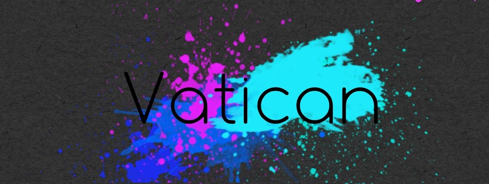

Vatican
Vatican
Vatican, simply known as Vt, is a newly created group that includes several fields of interest.
Vatican's core concept includes different kinds of as a part of their artistic group.
Under the influence of the interest of the group members, Vt includes European and American street culture, extreme sports of the hands and the body, artistic talents of all kinds and coolplays.
It doesn't matter what you specialize in, or where you are, as long as you have that passion in you, you are welcome to join us.
Together let's discover that Life can be exciting and the world is more than just days passing by. It all comes down to passion.